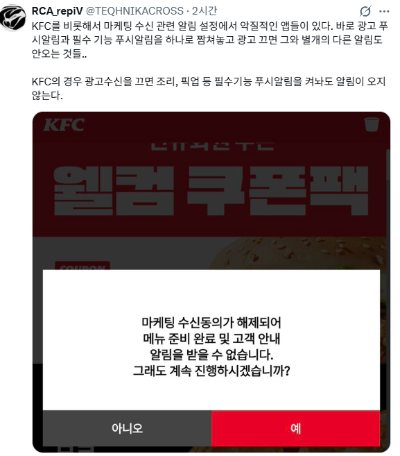

악질적인 앱 설계
댓글
저거 법에 안걸림?
광고성수신은 선택동의라 별개로 차단할 수 있어야하지 않나?
그걸 다크 패턴이라고 하는데 지금 준비중일걸
이미 시행 들어갔는디?
넌 변호사하면 잘나가겠다
마케팅 수신 극혐해서 모조리 차단시키는데 쟈는 저딴 경고메세지 보내서 가차없이 앱 지워버림
지들딴에는 똑똑하다고 생각해서 만들었겠지 정작 내실있는 고객들 다 떨어져 나가는건 생각 안하고
저런거 설계 하는 애들이 기업 좀 먹는거 괜히 KFC가 망해가는게 아님
탑텐 앱이 딱 저럼 ㅋㅋㅋㅋ
KFC 치킨만 ㅂㅅ된게 아니네
그런 ㅈ같은 앱은 지워버리고 안 씀
걍 시발 좆같은 알람 다 꺼버림
크린토피아도 ㅈ같음
우리동네지점은 거의 1주일에 한두번씩 "토요일 빨리 닫아용 오홍홍"이지랄 문자와 빨래 끝났으니 찾아가라는 문자를 한 번호로 보냄
차단할수가 없음 ㅅㅂ
문자 키워드 차단해서 토요일 관련 내용만 차단하면되는거아냐?
광고는 스팸으로 가는중이긴 한데 ㅋㅋ
토요일 쉬어요 문자만 오는게 아니라서
-빨래 수거하는 도둑 조심하세요
-휴무시간안내
-빨래는 xx지사에서 처리중입니다
등등 번호를 아예 차단하지 않는 이상 막을수가 없음
더 좆같은건 알림 안받겠다고 이미 했는데 계속 들어갈때마다 정말 알림 안할거예요? 하면서 팝업 띄우는거임
금융 앱 존나 좆같은게, 앱 킬때마다 마케팅 알림 받을래요? 물어봄. '30일간 안보기' 이런거밖에없음ㅋㅋㅋㅋ '앞으로 절대 안보기' 없음ㅋㅋㅋ 한달에 한번씩 시험에 들게됨ㅋㅋㅋ
사용자를 개조스로 보는 앱들은
나도 개조스로 봐야함
??: 아 알림 기능 따로 만들기 귀찮다...
가장 ㅈ같음